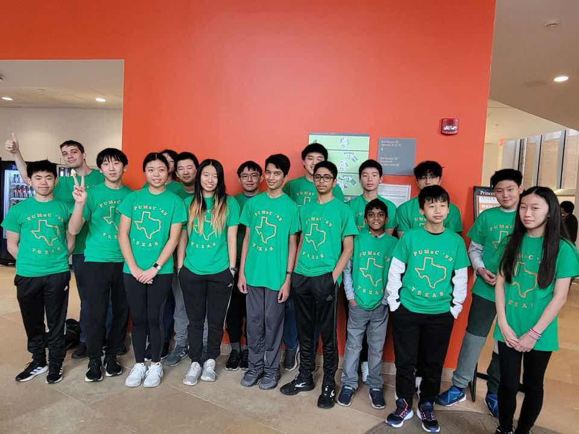

The Texas PUMaC 2023 Team
Texas Ramanujan
Ryan Chin (Captain)
Darren Han
Alexander Jun
Katherine Liu
Tarun Rapaka
Alexander Sun
Channing Yang
Raymond Zhao
Texas Hardy
Amogh Akella
Aaron Fan
Nolan Jiang
Nathan Liu
Nancy Lu
Krithik Manoharan
Judy Song
Jerry Zhang (Captain)
Coaches and organizers
Matthew Kroesche
Individual results (A Division)
Channing Yang placed 4th individually, 1st in Geometry, and 8th in Number Theory.
Alexander Jun placed 16th individually, 8th in Algebra, and 19th in Combinatorics.
Raymond Zhao placed 13th in Combinatorics and 17th in Geometry.
Amogh Akella placed 19th in Combinatorics and 20th in Number Theory.
Katherine Liu placed 19th in Combinatorics and 29th in Geometry.
Krithik Manoharan placed 18th in Algebra.
Nathan Liu placed 19th in Combinatorics.
Team results
Texas Ramanujan placed 8th overall, 5th in Team Round, and 22nd in Power Round.
Texas Hardy placed 22nd overall, 15th in Team Round, and 21st in Power Round.
Team photo

(Back to Main Page)